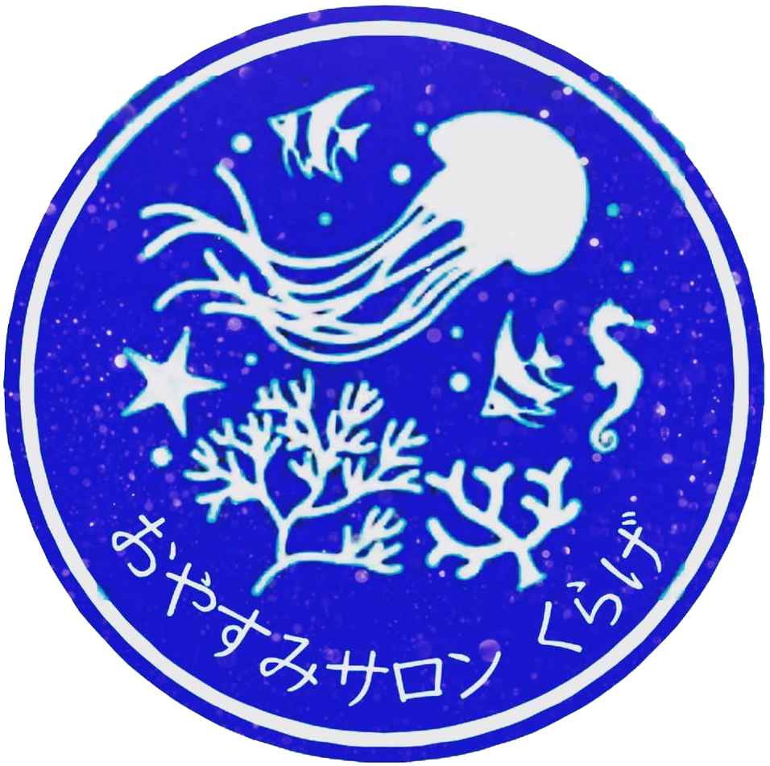
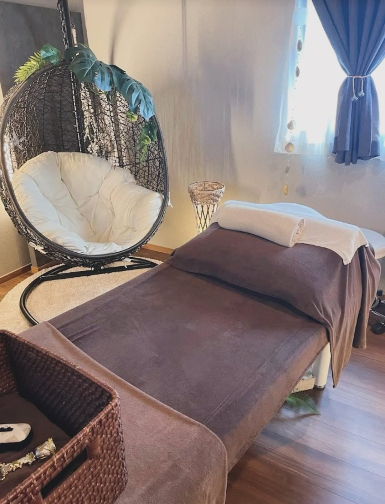
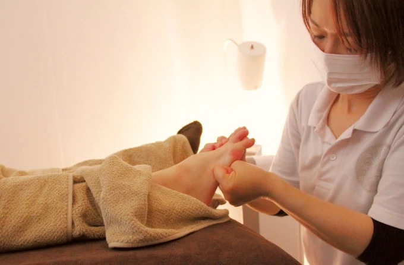
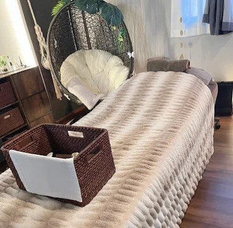
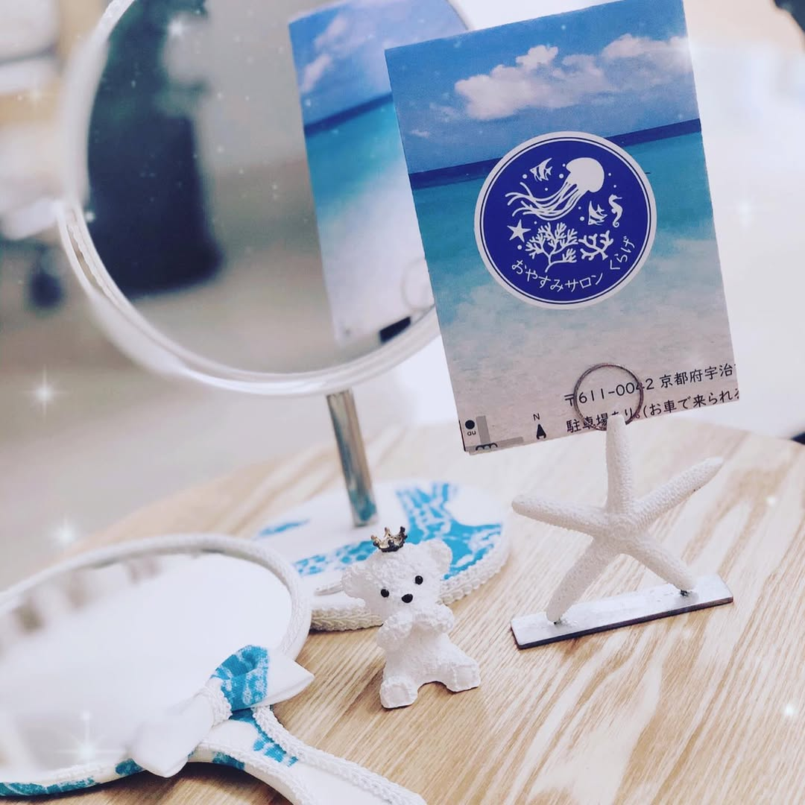

京都府宇治市の女性専用プライベートサロン。
推拿・リフレクソロジー・エステで、
日々の疲れをやさしく整えます。

おやすみサロンくらげは、京都府宇治市小倉町にある女性専用のリラクゼーションサロンです。
完全予約制の落ち着いた空間で、日々の疲れや身体の不調に寄り添い、一人ひとりに合わせたオーダーメイドの施術を行っています。
施術前には足湯とカウンセリングを行い、その日の体調やお悩みを確認。
心も体もふわっと軽くなるような、やさしい休息の時間をお届けします。
中国三大療法のひとつである推拿を取り入れ、衣服の上から全身にアプローチ。
肩こり・首こり・腰の重さなど、日常の疲れを心地よくほぐします。

足裏の反射区を刺激しながら、足の疲れやむくみをケア。
冷えやだるさが気になる方、内側からすっきり整えたい方にもおすすめです。

他のお客様を気にせず、ゆっくり過ごせる自宅サロンです。
力加減や触れてほしくない箇所にも配慮し、その日の状態に合わせて無理のない施術を行います。
静かな空間でゆっくり癒されたい方にぴったりです。
初めてのアロママッサージを体験しました。心も身体もリラックスしました。お店の雰囲気も良く落ち着く事ができました。オーナーさんも心優しい方でよかったです。身体も軽くなました。次回も宜しくお願いします。ありがとうございました。
- yu ki 様
こんにちは、昨日はありがとうございました！ゴルフ後にお店にお伺いさせて頂きました。体のあちこちが筋肉痛・お疲れモードでしたがたっぷりと時間をかけてしっかりほぐして頂きスッキリしました（＾＾）。気持ちよくて寝てしまいそうでした、またお伺いしたいと思います。
- ジョンマシュ 様
入った瞬間から癒しが広がる素敵空間です。オーナーさんのとことんのこだわりを感じる、大好きな場所です。
- Jumpei Inoue 様
おやすみサロンくらげは、ただ身体をほぐすだけでなく、
心までほっとゆるめられる場所でありたいと考えています。
忙しい毎日の中で、自分のことを後回しにしていませんか。
疲れたとき、不調を感じたとき、少し休みたいときに
思い出していただけるサロンを目指しています。
心も体も、
くらげのようにふわっと軽く。
皆さまのお越しを心よりお待ちしております。

オーナーセラピスト
約7年間エステティシャンとして経験を積み、ボディケアを学び直したのち、個人サロンをオープン。 一人ひとりのお悩みに寄り添いながら、推拿・リフレクソロジー・エステを組み合わせた施術をご提供しています。 お客様が心と体を癒し、前向きな気持ちで毎日を過ごせるよう、丁寧なケアを心掛けています。